Common Ground
My Role:
The Brief
Common Ground is an eco-conscious retreat designed for people seeking a slower and more intentional way of living. The challenge was to create a brand identity that felt calm, elevated, and deeply connected to nature, without relying on the visual clichés commonly found in wellness and retreat branding.
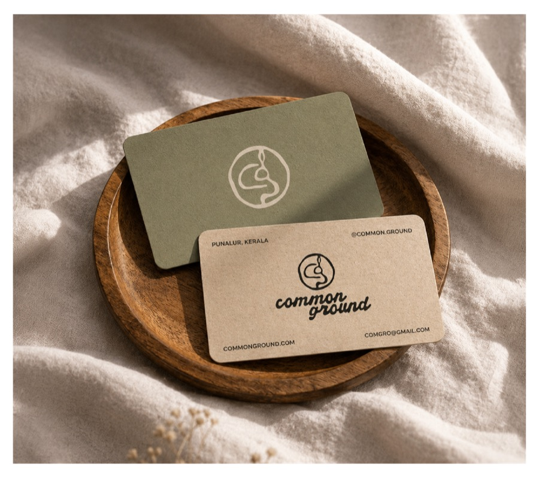
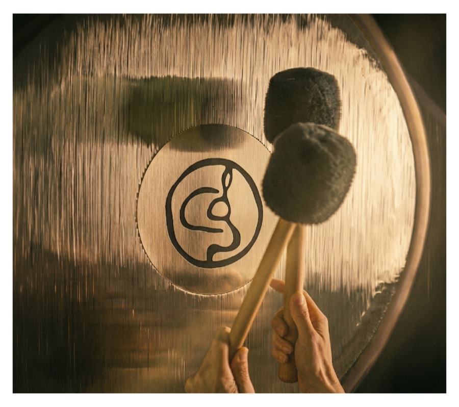
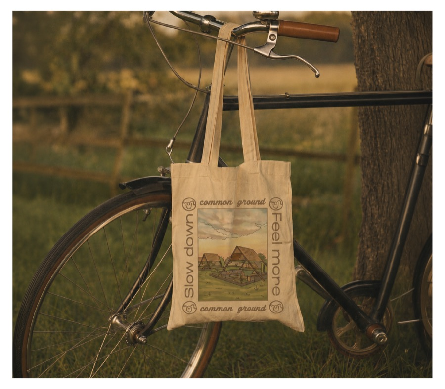
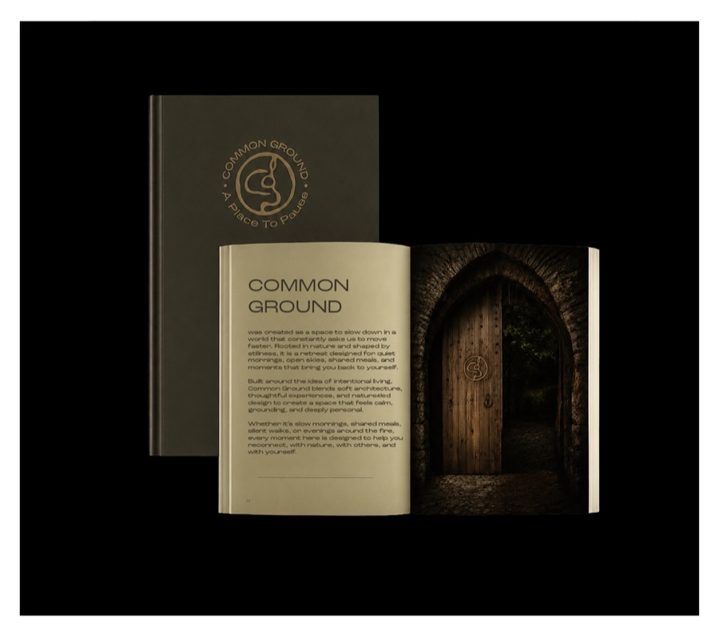
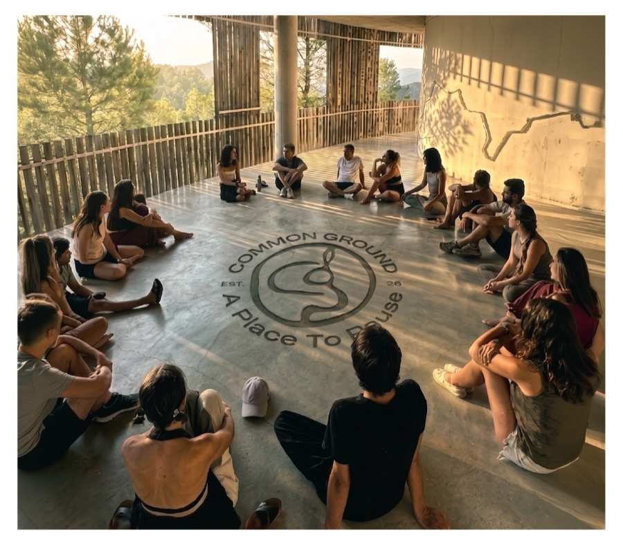
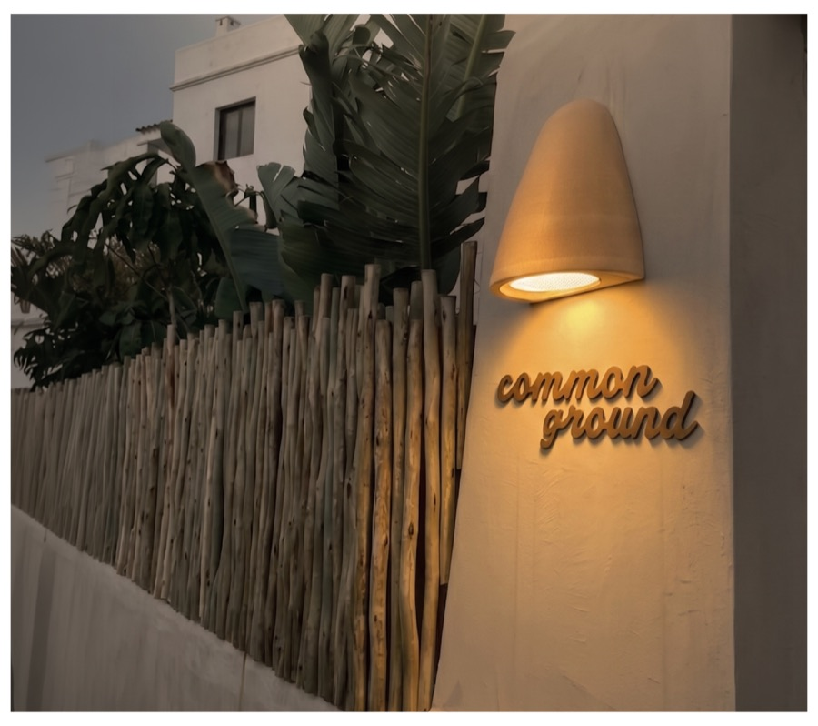
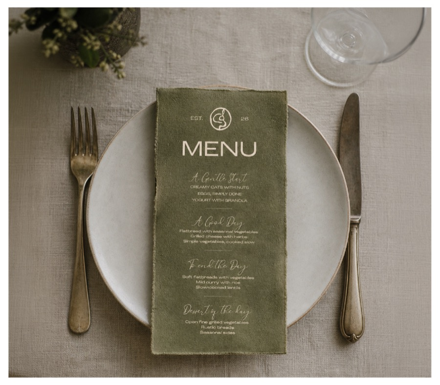
The Process
We explored how connection exists within nature itself. The identity was inspired by a project that documented aerial views of the Amazon River system forming natural letterforms from A to Z. Using this as a starting point, we developed hand-drawn “C” and “G” letterforms and refined them into a logo that reflects connection, flow, and shared space.
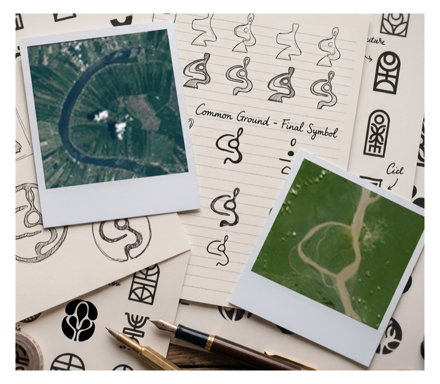
.jpg)
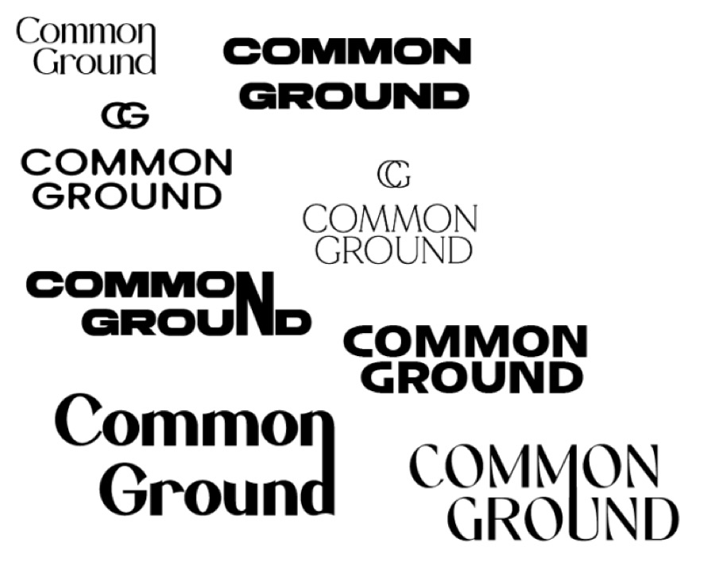
.jpg)
.jpg)

Logo Concept
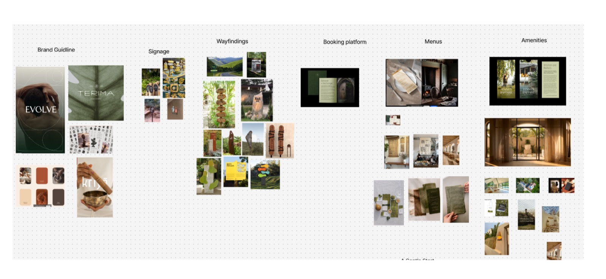
Reference Board
Bringing The Brand To Life
The identity was extended across multiple touchpoints including menus, business cards, wayfinding, website concepts, and retreat experiences.
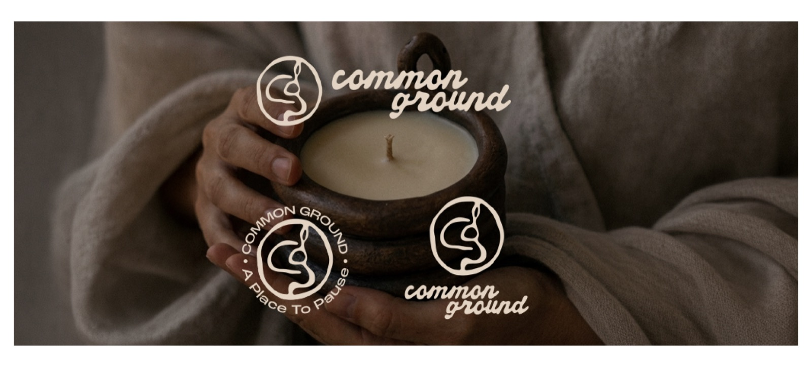
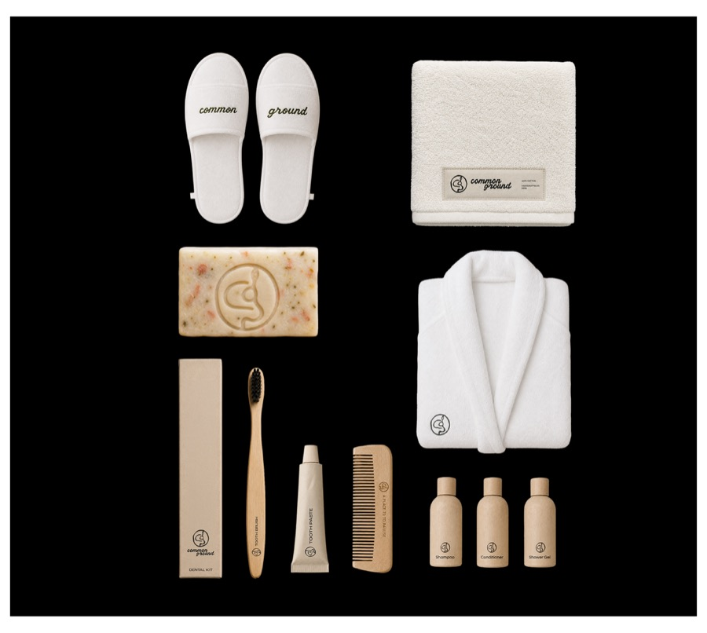
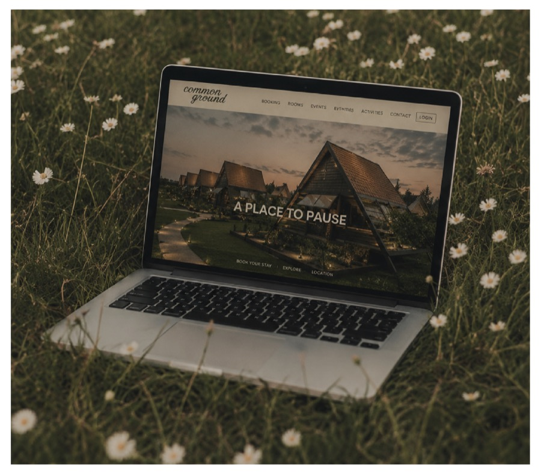
What I Learned
This project taught me that designing for nature does not always require obvious references to nature. Sometimes the strongest identities come from understanding a feeling and translating it into a visual system rather than directly illustrating it.